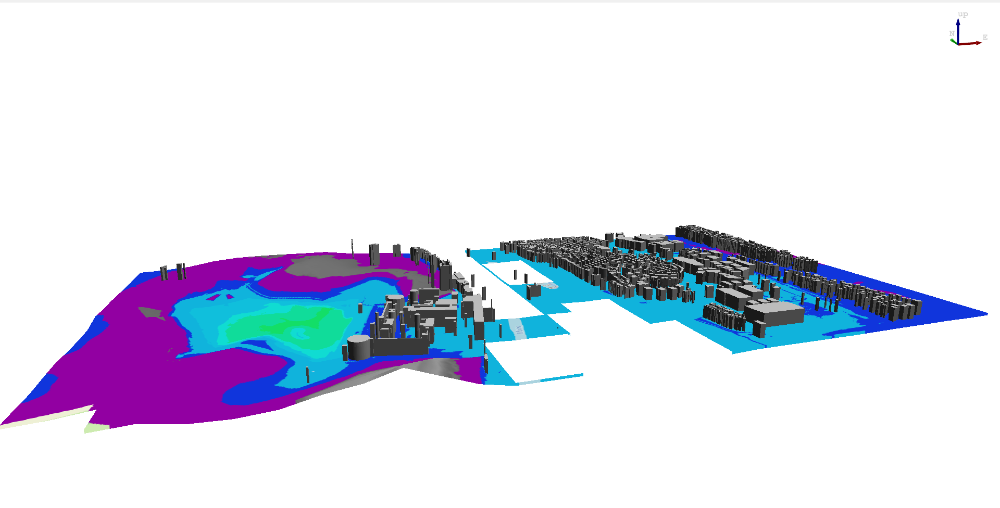
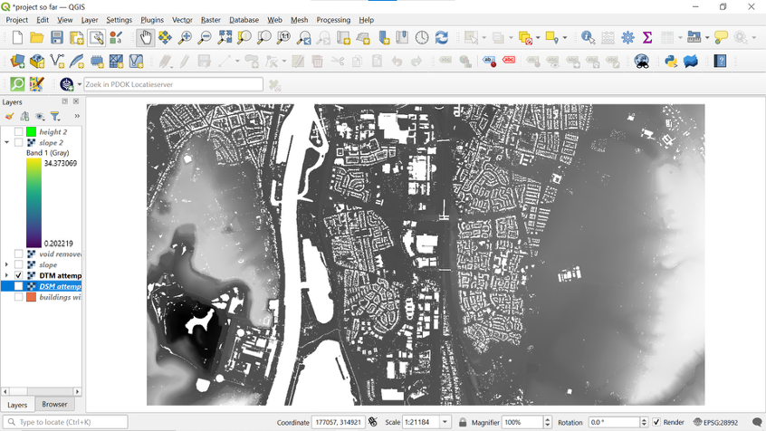
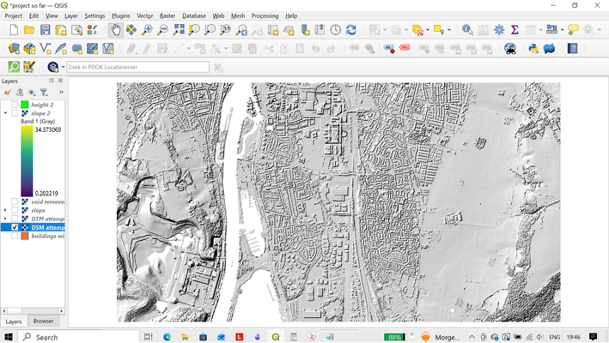
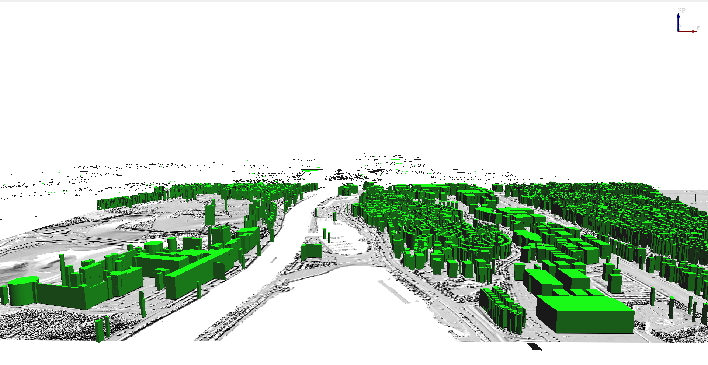

Final Map

Final map with height-based building extrusions, 3D terrain adjustment and a flood staircase that shows which areas will be affected by flooding increases of 10 meters incrementally.
Question 1: Where is your Region Of Interest (ROI) and why did you select it?
My region of interest was in Maastricht, Netherlands. The specific region was urban development around the river Maas and located in the southern region of the city. Specific features that can be seen in my pane are the Wilhelmina Brug and the Saint Peter mountain. I selected this area because Maastricht would be an interesting case study for a flood analysis. It's an urban region in the Netherlands that is located besides a large river. The city also has a hilly and variating landscape that makes it seem different from the rest of the Netherlands (I specifically chose the area with the mountain for this reason). I was very interested in looking at the effects that terrain variations would have on flooding in the suburbs. My selected area has a proper mixture of urban buildings such as bridges, boat docks, riverbanks, and residential areas which would provide me with interesting variations.
Question 2: Did you do the 3D urban flood example or the old map option?
If you did the old map - What map did you select? What is the date of the map – and any other relevant information? Who was the surveyor or cartographer? Do you know who commissioned the map?
If you did the urban example – which city and why? What was surprising?
I did the 3D urban flood example. I chose Maastricht because it is located by the river Maas and I could see flooding occur in a realistic scenario. As a city Maastricht would have to pay clear attention to flood management though proper draining and other hydrological interventions. The city also has more variation when compared to other Dutch regions which I felt would provide me with interesting analysis. What surprised me the most about the analysis was how much flood risk can change with the slightest amount of increase. I also found it interesting to note the different types of houses that were located near the floodplains while the more taller buildings were located more inland. I think that this may reflect historical settlement patterns. I also found the presence of trenches to be interesting as these areas of lower elevation could trap water and serve as a future headache for planners.
QUESTION 4: What is the total size of your new merged or clipped file DTM and DSM?
My DSM file after clipping had a size of 224 mb and my DTM file had a size of 224 mb as well. When combined, it adds up to 448 mb. I got the size of the files from properties.
Alternatively, if the question is about in program size of the raster layers, the both of them have a dimension of X: 10441 Y: 5626
QUESTION 5: How big is your area in KM sq or M sq?
14643523.623 m² which when divided by a million to get the km² (1000 x 1000) gives us 1.47km²
Question 6: In your own words, describe the new skills you used in this assignment and why you did them (revisit p 3).
This assignment built on the importance of layers from the previous assignment. In my opinion, this is the main benefit of a program using GIS. I could quickly turn layers on and off according to my needs and I could quickly compare the information on my screen. I also learned how to use plugins which allowed me to easily access open source data. Merging and clipping raster layers was another lesson. I found it to be very useful as it allowed me to reduce the size of the large DSM and DTM files. These files contain a lot of data, and it was very useful that I could clip them and only focus on what was necessary. Removing the “void” from files was very important in keeping the ground area uniform and proper and ensuring the accuracy of my work.
I also learnt about DTM and DSM data and LIDAR scanning. I had heard about LIDAR from its use in autonomous cars and driving but I wasn't very familiar with their use in geography. I studied geography in Middle School and learned reading contour lines. When I looked at the DTM layer, I was reminded of those lines. It was surprising to think of the fact that this could now be done autonomously, with no need for geographers to do so manually.
The last thing that I learnt was a 3D map view. This map view was extremely interesting to me. While you could not see the actual model of the building, I felt that the transformation of polygons into 3d columns through extrusion was an extremely intelligent way. I realized that goals can be achieved through a variety of techniques, even though unexpected methods.
QUESTION 7: Please include a screenshot of your DTM, DSM, RGB, and your old map or 3D Scene screenshot overlayed with transparency on them
I did not have an RGB image for this assignment as I was not comparing historical maps, but I have chosen to include the 3d view of my map instead along with the building data.
DTM Map

DTM Map
DSM map

DSM map
Buildings layer with their height extrusions

Buildings layer with their height extrusions
Final map with height-based building extrusions, 3D terrain adjustment and a flood staircase that shows which areas will be affected by flooding increases of 10 meters incrementally (starting from 13 as minimum followed by 20, 30, 40, 50, 60 and 100 meters)
Final map with height-based building extrusions, 3D terrain adjustment and a flood staircase that shows which areas will be affected by flooding increases of 10 meters incrementally (starting from 13 as minimum followed by 20, 30, 40, 50, 60 and 100 meters)